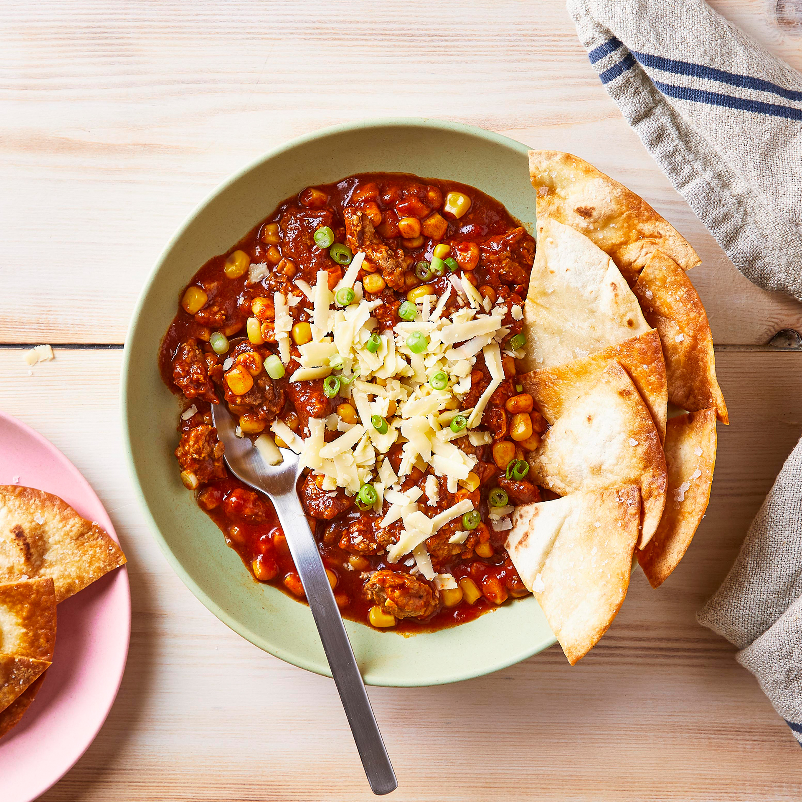

Beef Tortilla Chili

Chili season is upon us... and this hearty beef tortilla slow cooked chili recipe is an easy way to kick it off!
Chili is always... at the top of my list when the weather cools and a chili recipe where a slow cooker does the work for me is even better!
I love how... hearty a good chili is and you can serve it so many different ways that leftovers are never a problem—ladled on hot dogs, spooned over baked potatoes, or just piled high in a bowl with toppings!
Ingredients:
- 2 tablespoons olive oil
- 2 pounds (90/10) ground beef
- 1 white onion, diced
- 4 cloves garlic, minced
- 1 tablespoon cumin seeds
- 2 tablespoons mild chili powder
- 1 teaspoon dried oregano
- 1/4 teaspoon ground cinnamon
- 1 cup lager beer or beef stock
- 1 (4.5 ounce) can green chiles
- 2 (15 ounce) cans kidney beans, drained and rinsed
- 2 (15 ounce) cans diced tomatoes
- 1 (15 ounce) can tomato sauce
For the crispy tortilla strips (garnis):
- 8 small tortilla corn tortillas, sliced into strips
- 1 tablespoon olive oil
- 1 teaspoon chili powder
- 1/2 teaspoon kosher salt
For the garnish:
- Sour cream
- Grated Cheese
- Chives
Recipe Instructions:
- Brown the beef: In a large skillet set over medium-high heat, add the olive oil. Once it is hot, add ground beef and cook, breaking up the beef as it cooks, until beef is browned in spots, 7-8 minutes. Add onions, garlic, and spices and continue to cook for a few minutes to combine flavors. At the very end of browning, add beer or stock and use the liquid to scrape up any stuck bits from the skillet.
- Add to the slow cooker: Transfer all the skillet ingredients to a slow cooker along with green chiles, beans, diced tomatoes, and tomato sauce. Cover the chili and cook on high for four hours, stirring occasionally, or set to low for 8 hours.
- Finish the chili: Season the chili with salt and pepper to taste once it has cooked. Serve it in big bowls garnished with cheese, sour cream, chives, and tortilla strips.
- To make the crispy corn strips: Preheat oven to 375 ̊F. Slice tortillas into strips and spread them out on a baking sheet. Drizzle with oil and spices and use your hands to mix together. Spread out in an even layer and bake the strips for 5-6 minutes. Then stir strips to make sure they are cooking evenly. The ones around the edges will cook faster. Bake for 4-5 minutes and then remove from oven and cool. Tortilla strips will continue to get crispy as they cool.
Return To Home